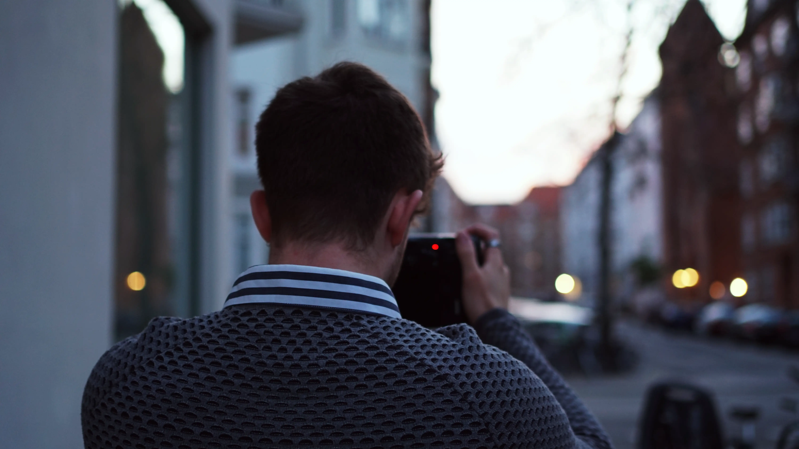

Website
Under tema 2 fik vi til opgave at lave en responsiv hjemmeside ved hjælp af html og css. Her lærte jeg om semantisk markup, html elementer og attributter, om deres egenskaber, hvordan man bruger dem, og hvordan man ændrer deres styling i css. For at løse opgaven gjorde jeg brug af flex og grid, så det færdige resultat matchede wireframes og layoutet til de forskellige sider bedst muligt. Jeg brugte media queries til at gøre hjemmesiden responsiv på både computer og mobil.

Emnesite
Under tema 2 fik vi til opgave at designe og lave en hjemmeside med valgfrit emne, ved hjælp af html og css. Mit emne var Disney og temaet på siden er inspireret af retro design. Her lærte jeg om farvekontraster, fonte, tekstopsætning, rettigheds licenser og billedbehandling. Jeg lavede hjemmesiden ud fra moodboards og styletiles som jeg designede i Adobe XD. Formålet med opgaven var at lære at skabe en hjemmeside med indhold fra bunden, og lære hvilke design udviklingsteknikker der er optimale at bruge, når man skal udvikle en hjemmeside. Jeg løste opgaven ved hjælp af grids og media queries, og valgte billeder, farver og fonte, der passede til temaet.
Pitch
Under tema 3 fik vi til opgave at lave vores egen webshop som solgte t-shirts. Vi blev introduceret til UX design hvor jeg lærte hvordan man skaber et digitalt produkt med brugerens behov i fokus. For at løse opgaven arbejdede jeg med forskellige researchmetoder, sketching fasen og lavede brugertest, som skulle være med til at sikre en god brugeroplevelse for kunden, og at produktet faldt i målgruppens smag. Vi fik også til opgave at designe en prototype af vores webshop i Adobe XD, hvor jeg gjorde den interaktiv med links, så man kunne lave brugertest på den. Til sidst i temaet lærte jeg at lave en UX pitch, hvor jeg præsenterede min færdige prototype, svarene fra mine observationer i researchfasen og fra forskellige brugertests.

Temaopgave
Under tema 4 fik vi til opgave at designe og animere et spil ved hjælp af html, css og Javascript. Her arbejdede jeg med idé- og sketching-fasen, hvor jeg kom på ideer til handlingen, figurerne og stilen. Ved sketching-fasen lavede jeg først skitser af spil-elementerne, og derefter rentegninger af dem i Adobe Illustrator. Under dette tema blev vi introduceret til Javascript, som jeg brugte til at gøre spillet og elementerne interaktive. For at gøre spillet interaktivt bruger jeg funktionen querySelector og skiftevis fjerner og tilføjer de forskellige klasser som jeg har defineret, og derefter tilføjer event listeners, som lytter efter klik på de forskellige elementer og knapper, som sætter animationerne i gang. Det sværeste under dette tema var få Javascript til at fungere ordentligt. Derfor endte spillet med ikke at fungere præcis som planlagt.

Videosite
Under tema 5 skulle vi lave en hjemmeside som skulle omhandle et videointerview med en person, som fortæller om sin passion. Her redigerede jeg i Premiere Pro, hvor jeg lavede en kort video som skulle indeholde b-rolls, flydende overgange og klar og tydelig synkroniseret lyd. Det færdige resultat havde problemer med at lyden var for lav, og overgangene var ikke gode nok. Udover videointerviewet, indeholder hjemmesiden også en filmplakat og 4 fotos fra dagen, som jeg redigerede i Photoshop, så de alle sammen havde samme stil.
Virksomhedssite
Under tema 5 skulle vi i grupper af 4 lave et videointerview, et redesign og en forbedret brugeroplevelse, af en allerede eksisterende virksomheds hjemmeside. Her lærte vi om projektstyring, hvor vi gjorde brug af scrum-metoden og oprettede et trello board, som var med til at give overblik over processen og hvilke opgaver vi skulle, var i gang med, og havde færdiggjort. Vi arbejdede med Github, hvor vi lærte hvordan man opretter et repository og kan samarbejde om et projekt i Visual Studio Code. Derudover gjorde vi også brug af research fasen, lavede styletiles, moodboards, og en prototype i Adobe XD. Vi arbejdede med Union T's hjemmeside. Vi tog ud og besøgte dem, hvor vi filmede videointerviewet, og tog billeder til redesignet af hjemmesiden. Det sværeste under dette tema var gruppearbejdet. Min gruppe havde en masse udfordringer undervejs i forløbet, men formåede alligevel at præsentere et færdigt produkt.